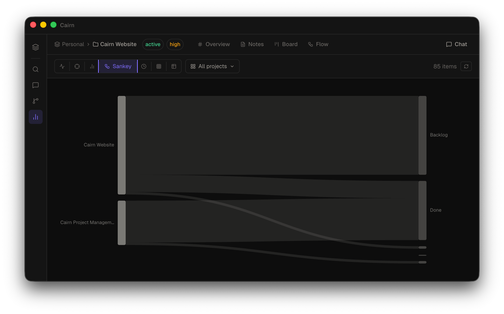

Insights
A dedicated analytics view that surfaces patterns across your tasks and projects. Seven canvases, one toolbar — scoped to whatever projects you care about.

Opening Insights
Click Insights in the bottom section of the left sidebar (below Knowledge Graph, above Settings). The keyboard shortcut is Cmd 6.
Canvas reference
Use the toolbar at the top of the Insights view to switch between the seven canvases:
| Canvas | Description |
|---|---|
| Ridgeline | Task activity rendered as a joy plot — one horizontal row per project, height represents task count per time bucket. Scroll to zoom the time axis, drag to pan. Three display modes: ridge, flat, and 3D. |
| Beeswarm | Tasks plotted on a shared time axis, one horizontal lane per project. Dot size encodes priority. A D3 force simulation prevents overlap so every task is visible. |
| Bullet | Project health dashboard. Each project gets a horizontal bar showing completion percentage, with urgency bands, an overdue marker, and a today tick for orientation. |
| Sankey | Task flow through your pipeline stages (Backlog → Todo → In Progress → Review → Done). The width of each flow represents the number of tasks. Click a stage node to inspect its tasks. |
| Timeline | All tasks with due dates sorted chronologically, grouped by project. Useful for spotting deadline clusters across your workspace. |
| Matrix | Tag co-occurrence heatmap showing which tags appear together most frequently. Hover a cell to preview the shared items; click to pin the selection. |
| Table | Flat sortable list across all notes, tasks, and projects in the workspace. Sort by name, type, project, priority, or last updated. Filter by entity type using the type pills. |
Filtering by project
By default, Insights shows data from all projects in the workspace. Use the project dropdown in the toolbar to scope any canvas to one or more specific projects. The filter persists as you switch between canvases.
Insights vs Knowledge Graph
These are two distinct views with different purposes:
- Knowledge Graph (Cmd 5) — shows relationships between entities: who links to what, co-mentions, shared assignees. Best for understanding structure and connections.
- Insights (Cmd 6) — shows patterns in your data: activity over time, task flow, project health, tag usage. Best for spotting trends and reviewing progress.
The Insights canvases read directly from your workspace data and are not exposed via MCP tools. Use get_knowledge_graph or list_tasks if you need programmatic access to the underlying data.